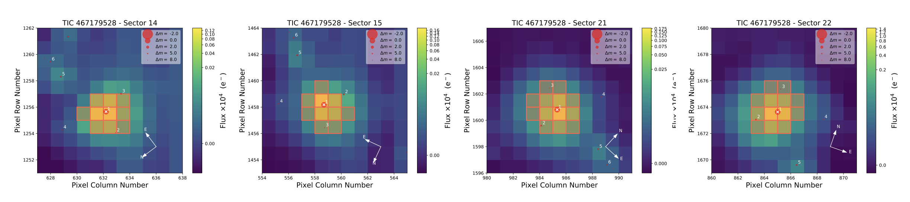
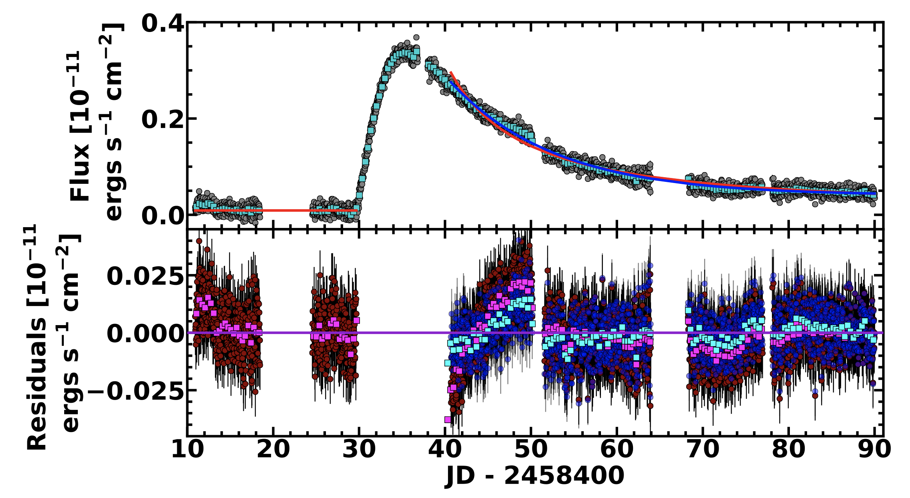

STATUS UPDATE: Sector 27 data comes out Monday! We are still in Sector 29. The target lists for Sectors 29 and 30 are online and can be found here.
Hello TESS followers and welcome to our weekly news bulletin! This week there are multiple papers posted to the archive that use TESS data, well done authors! This bulletin features three of these papers.
A super-Earth and a sub-Neptune orbiting the bright, quiet M3 dwarf TOI-1266 (Demory et. al., 2020) :
The authors present evidence for two planets orbiting a close (37 pc), bright (K = 8.8), M3V dwarf star known as TOI-1266. Using TESS photometry and data from the SAINT-EX telescope, the planets are thought to be a super-Earth and sub-Neptune. The inner, larger planet has a R= 2.37 R⊕, and an orbital period of 10.9 days. The outer, smaller planet has a radius of R=1.56 R⊕ and an 18.8 day orbit. Further data analysis by the authors also allowed them to place constraints on the masses and eccentricities of the planets. The larger planet, TOI-1266 b, has a mass of Mp = 13.5 M⊕, and the smaller planet TOI-1266 c has a mass of 2.2 M⊕. The eccentricities of both planets are considered small, but non-zero at 0.09 for TOI-1266 b, and 0.04 for TOI-1266 c. See the paper for further details about this interesting system..
TIC 278825952: a triply eclipsing hierarchical triple system with the most intrinsically circular outer orbit (Mitnyan et. al., 2020) :
A compact triply eclipsing triple star system has been discovered in TESS’s southern continuous viewing zone. The system, TIC 278825952, is a circular eclipsing binary with a period of 4.78 days, with a tertiary component in a wider, circular orbit of 235.55 days. Analysis by the authors indicates that the inner binary contains slightly evolved, almost twin stars, of 1.12 M⊙ and 1.09 M⊙, with radii of 1.41 R⊙ and 1.31 R⊙. The third star has a lower mass of 0.75 M⊙ and and radius of 0.7R⊙.
ASASSN-14ko is a Periodic Nuclear Transient in ESO 253-G003 (Payne et. al., 2020) :
In this paper the authors present a study of ASASSN-14ko. This object was originally classified as a supernova close to its hosts nucleus by the All-Sky Automated Survey for Supernovae. Further observation of the event has however revealed its true nature, as a nuclear flare occurring at regular intervals. There have been 17 further outburst, with the most recent in May 2020. Using these multiple events there is now evidence of a decreasing period over time, with a mean of P0 = 114.2 days. TESS observed an outburst in sectors 4-6, revealing a rise time of 5.6 days in the optical and a decline that best fits an exponential model. Data combined from multiple facilities suggest that this is a repeated partial tidal disruption event. Further discussion of the possible scenarios for ASASSN-14ko are presented in this paper.

Fig 1: Taken from Demory et. al., (2020). The TESS target pixel files for the four sectors that observed TOI-1266. The standard SPOC apertures which were used to extract photometry are shown by the red encompassed pixels. The Gaia DR2 catalog is over plotted, showing sources up to 8th magnitude in contrast with TOI-1266 as red circles. The size of the red circle is representative of the difference in magnitude.

Fig 2: Taken from Payne et. al., (2020). This figure presents the declining phase models of the TESS ASASSN-14ko light curve starting 5 days past peak. The best-fit power-law decline is shown in red and the best-fit exponential decline is shown in blue. The TESS data is binned in 8 hour intervals and are shown by the turquoise squares. The bottom panel shows the residuals of the fits color-coded by model. Magenta and cyan squares show the residuals of the power-law decline and exponential decline compared to the binned TESS data, respectively.